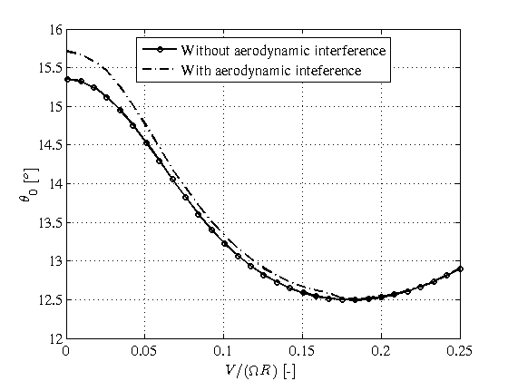
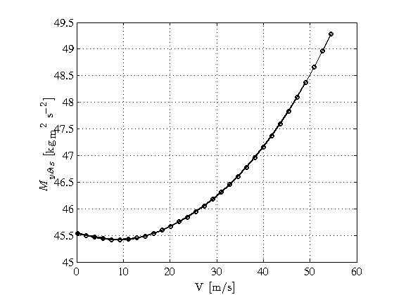

Contents
Helicopter Trim and Stabillity Analysis
This demo shows how to use trim and stability functions to understand how to obtain helicopter trim state, helicopter components actions, helicopter stability derivatives, helicopter control derivatives, helicopter linear stability eigenvalues and eigenvectors.
close all
setPlot;
First we setup heroes environment by defining an ISA+0 atmosphere and a Bo105 rigid helicopter which are stored at the variables atm and he respectively.
atm = getISA; he = PadfieldBo105(atm);
Trim and stability default computing options are defined by the function setHeroesRigidOptions. To setup these default options just get them by using setHeroesRigidOptions. We shall explore some of this options latter in this demo. For more information regarding these default options see also setHeroesRigidOptions help documentation.
options = setHeroesRigidOptions;
getNdHeTrimState is the main trim function and inputs to this function should be nondimensional helicopter and nondimensional flight conditions To transform the physical helicopter, he, to nondimensional helicopter we use the function rigidHe2ndHe and store the nondimensional helicopter at the variable ndHe. The function rigidHe2ndHe requires as inputs the physical helicopter, the atmosphere and the altitude of computation. Thus, the nondimensional helicopter ndHe depends on the altitude, or in other words, for one physical helicopter we need to create an instance of a nondimensional helicopter for each altitude of interest.
hsl = 0; ndHe = rigidHe2ndHe(he,atm,hsl);
To define a flight condition we have to specify nondimensional wind and five state variables. First we setup no wind by defining a null vector of dimensions 3x1. Then we define a straight and leveled forward flight condition by specifying the nondimensional velocity modulus, VOR, the fuselage yaw angle, betaf0, to zero, the trayectory curvature, cs, set as zero as well as vertical and lateral velocities with respect ground, wTOR and vTOR. For more information about how to define flight conditions for trim and stability analysis see also getNdHeTrimState
muWT = [0; 0; 0];
ndV = linspace(0.001,0.25,31);
FC = {'VOR',ndV,...
'betaf0',0,...
'wTOR',0,...
'cs',0,...
'vTOR',0};
To compute the nondimensional trim state just use the function getNdHeTrimState.
ndts = getNdHeTrimState(ndHe,muWT,FC,options);
Solving trim... 1 of 31 Solving trim... 2 of 31 Solving trim... 3 of 31 Solving trim... 4 of 31 Solving trim... 5 of 31 Solving trim... 6 of 31 Solving trim... 7 of 31 Solving trim... 8 of 31 Solving trim... 9 of 31 Solving trim... 10 of 31 Solving trim... 11 of 31 Solving trim... 12 of 31 Solving trim... 13 of 31 Solving trim... 14 of 31 Solving trim... 15 of 31 Solving trim... 16 of 31 Solving trim... 17 of 31 Solving trim... 18 of 31 Solving trim... 19 of 31 Solving trim... 20 of 31 Solving trim... 21 of 31 Solving trim... 22 of 31 Solving trim... 23 of 31 Solving trim... 24 of 31 Solving trim... 25 of 31 Solving trim... 26 of 31 Solving trim... 27 of 31 Solving trim... 28 of 31 Solving trim... 29 of 31 Solving trim... 30 of 31 Solving trim... 31 of 31
The nondimensional trim state output structure, ndts, contains 6 main substructures: solution, vel, residuals, flags, actions, and ndPow. Both residuals and flags substructures contain information about the quality of the solution and they should be inspected to check and debug solutions which could not be converged. Both vel and ndPow provide information about the local velocity fields at each component of the helicopter and global power consumption, respectively. For the moment being, these substructures does not have plot functions and they can only be accessed or used by other functions. The main numerical useful data is contained at solution and actions substructures. Plot functions for solution and actions trim state substructures are plotNdTrimSolution and plotActionsByElements respectively.
Because we have defined a vector of flight conditions by specifying a vector of nondimensional helicopter velocity modulus we have obtained a vector of trims states which can be readily input to trim plot functions.
First we plot the nondimensional trim state solution by using plotNdTrimSolution. By default this trim plot function plots the 42 trim state variables. Because these number of variables is too much for a demonstration we are going to plot just the euler and control angles required for flying the above flight condition. To do so, we define a z-axis by specifying these variables. The independent variable is obviously the nondimensional velocity modulus and this variable defines the x-axis. Finally and because by default plotNdTrimSolution tries to plot all the variables into one single figure we set the plot2dMode to nFigures. In this way, plotNdTrimSolution, plots each variable into a single figure.
azdsTS = getaxds(... {'Theta','Phi',... 'theta0','theta1C',... 'theta1S','theta0tr'},... {'$$\Theta$$ [$$^o$$]','$$\Phi$$ [$$^o$$]',... '$$\theta_{0}$$ [$$^o$$]','$$\theta_{1C}$$ [$$^o$$]',... '$$\theta_{1S}$$ [$$^o$$]','$$\theta_{0tr}$$ [$$^o$$]'},... [180/pi,180/pi, ... 180/pi,180/pi,... 180/pi,180/pi]... ); axds = getaxds({'VOR'},{'$$V/(\Omega R)$$ [-]'},1); plotNdTrimSolution(ndts.solution,axds,[],... 'defaultVars',azdsTS,... 'plot2dMode','nFigures');
Now we plot the nondimensional actions by each element of the helicopter, i.e. main rotor (mr), tail rotor (tr), fuselage (f), left horizontal tail plane (lhtp), right horizontal tail plane (rhtp), vertical fin (vf) and weight (W). Actions are forces and moments of each helicopter component. One important difference with respect trim state is that flight condition parameters are not included in the substructure actions. Therefore function plotActionsByElements inputs not only the indepedent variable axis definition but also the independent variable values. As before, plotActionsByElements by default plots all the force and moment vector components and because it is too much information for this preliminary demonstration we set onlyto be plotted the three components of forces and moments with respect the center of gravity of the helicopter. By default these actions components are projected into the fuselage frame, i.e. body coordinate system. See also plotActionsByElements options to obtain ground coordinate system actions projections. Note that the sum of each action component by elements should be equal to zero at each helicopter velocity because of the trim condition definition.
azdsACT = getaxds({'CFx' 'CFy' 'CFz' ...
'CMtx' 'CMty' 'CMtz'},...
{'$$C_{Fx}$$ [-]' '$$C_{Fy}$$ [-]' '$$C_{Fz}$$ [-]' ...
'$$C_{Mx}$$ [-]' '$$C_{My}$$ [-]' '$$C_{Mz}$$ [-]'}, ...
[1 1 1 ...
1 1 1]);
plotActionsByElement(ndts.actions,axds,ndV,'defaultVars',azdsACT);
How to compute trim states with different options
Now we are going to show how to compute and plot trim states with different computing options. Default options are set by setHeroesRigidOptions function. The way to override these default options is to define a cell with pair-values of the required options to be changed. For instance, by default setHeroesRigidOptions does not account for any aerodynamic interference between helicopter components. However, heroes provides some simple aerodynamic models to account for the main rotor wake downwash interference with the other components. For a theoretical review of these models see chapter 6 of reference [1]. In this section of the demonstration we are going to set the aerodynamic interference using a linear function by setting the fuselage, tailrotor, vertical fin, left and right horizontal tail planes interference aerodynamic models to @linearInterf. So, we define a cell of pair-values specifying these pair-values, options1. The function parseOptions compares the subset of non-default options, options1, with the default options and sets the values defined by options1 and the other ones are set to default values. See also setHeroesRigidOptions documentation help for more information.
options1 = {...
'fInterf',@linearInterf,...
'trInterf',@linearInterf,...
'vfInterf',@linearInterf,...
'lHTPInterf',@linearInterf,...
'rHTPInterf',@linearInterf ...
};
options1 = parseOptions(options1,@setHeroesRigidOptions);
Once the new options are defined they are just input to the trim and stability analysis functions. Therefore, using getNdHeTrimState we obtain a new trim state computed using the aerodynamic interferente between main rotor and th other helicopter components. To compare both trim states and find out what the differences between both computations are we should define a cell of trim state solutions, ndtsSol. This cell of trim state solutions can be input into plotNdTrimState to plot both trim state solutions. To distinguish between both series we define a cell of legends of size 2x1 specifying a meaningful text to each cell slot.
ndts1 = getNdHeTrimState(ndHe,muWT,FC,options1);
ndtsSol = {ndts.solution,ndts1.solution};
leg = {'Without aerodynamic interference',...
'With aerodynamic inteference'};
plotNdTrimSolution(ndtsSol,axds,leg,...
'defaultVars',azdsTS,...
'plot2dMode','nFigures');
Solving trim... 1 of 31 Solving trim... 2 of 31 Solving trim... 3 of 31 Solving trim... 4 of 31 Solving trim... 5 of 31 Solving trim... 6 of 31 Solving trim... 7 of 31 Solving trim... 8 of 31 Solving trim... 9 of 31 Solving trim... 10 of 31 Solving trim... 11 of 31 Solving trim... 12 of 31 Solving trim... 13 of 31 Solving trim... 14 of 31 Solving trim... 15 of 31 Solving trim... 16 of 31 Solving trim... 17 of 31 Solving trim... 18 of 31 Solving trim... 19 of 31 Solving trim... 20 of 31 Solving trim... 21 of 31 Solving trim... 22 of 31 Solving trim... 23 of 31 Solving trim... 24 of 31 Solving trim... 25 of 31 Solving trim... 26 of 31 Solving trim... 27 of 31 Solving trim... 28 of 31 Solving trim... 29 of 31 Solving trim... 30 of 31 Solving trim... 31 of 31
Linear Stability analysis
From the nondimensioal trim state solution we can build up linear stability analysis. The main function to obtain the linear stability from a trim state of a nondimensional helicopter is getndHeLinearStabilityState. The output of this function, ndSs, is a cluttered structure with nondimensional stability derivatives, nondimensional control derivatives, nondimensional eigenvalues and nondimensional eigenvectors. ndSs is also called in short a stability state.
ndSs = getndHeLinearStabilityState(ndts,muWT,ndHe,options);
... Getting linear stability states ... Solving Stability... 1 of 31 Solving Stability... 2 of 31 Solving Stability... 3 of 31 Solving Stability... 4 of 31 Solving Stability... 5 of 31 Solving Stability... 6 of 31 Solving Stability... 7 of 31 Solving Stability... 8 of 31 Solving Stability... 9 of 31 Solving Stability... 10 of 31 Solving Stability... 11 of 31 Solving Stability... 12 of 31 Solving Stability... 13 of 31 Solving Stability... 14 of 31 Solving Stability... 15 of 31 Solving Stability... 16 of 31 Solving Stability... 17 of 31 Solving Stability... 18 of 31 Solving Stability... 19 of 31 Solving Stability... 20 of 31 Solving Stability... 21 of 31 Solving Stability... 22 of 31 Solving Stability... 23 of 31 Solving Stability... 24 of 31 Solving Stability... 25 of 31 Solving Stability... 26 of 31 Solving Stability... 27 of 31 Solving Stability... 28 of 31 Solving Stability... 29 of 31 Solving Stability... 30 of 31 Solving Stability... 31 of 31
Once we have obtained the nondimensional stability state, it is transformed into a dimensional stability state object using the function ndHeSs2HeSs which requires as input the nondimensional stability state, the atmosphere and the altitude of computation.
Ss = ndHeSs2HeSs(ndSs,he,atm,hsl,options);
The main plot stability state functions plot stability and control derivatives, eigenvalues and eigenvectors.
First we are going to plot the stability derivatives using the function plotStabilityDerivatives. The first step is to select what kind of stability derivatives we are going to plot. As an example, we store the substructure AllElements of stability derivatives of the stability state object Ss into SsStaDer structure. Because this substructure does not contain information about the independent variable of the analysis we add the velocity modulus to SsStaDer which is the structure to be plotted. As stability derivatives are dimensional variables it makes sense to plot them as functions of helicopter velocity modulus instead of nondimensional velocity modulus VOR. Thus, we define a field V containing the velocity modulus in meters per second.
SsStaDer = Ss.stabilityDerivatives.staDer.AllElements; V = ndV*he.mainRotor.R*he.mainRotor.Omega; SsStaDer.V = V;
Finally, we plot the stability derivatives structure, SsStaDer, using plotStabilityDerivatives. The x-axis is now redefined to be the substructure velocity modulus, V. By default plotStabilityDerivatives plots the 53 stability derivatives and because for this demonstration 53 plots are too much information we are going to plot two important longitudinal stability derivatives. We define the z-axis of dependent variables by chosing Fx_u which is forward force variation due to a variation in the forward velocity, and My_w which is the pitching moment variation due to variation in the vertical speed.
axds = getaxds({'V'},{'V [m/s]'},1);
azdsSD = getaxds(...
{'Fx_u',...
'My_w'},...
{'$$F_{x,u}$$ [kg s$$^{-1}$$]',...
'$$M_{y,w}$$ [kg m s$$^{-1}$$]'},...
[1,1] ...
);
plotStabilityDerivatives(SsStaDer,axds,[],...
'defaultVars',azdsSD,...
'plot2dMode','nFigures')
To plot control derivatives we follow the same procedure as above. First we define a control derivatives structure SsConDer with the control derivatives of all elements and velocity modulus as fields. Then, we define the dependent variable z-axis structure by selecting some control derivatives. For this demonstratation we choose heave control power or collecive control power, Fz_t0, and the longitudinal cyclic control power or pitch control power derivative, My_t1S.
SsConDer = Ss.controlDerivatives.conDer.AllElements; SsConDer.V = V; azdsCD = getaxds(... {'Fz_t0',... 'My_t1S'},... {'$$F_{z,\theta_0}$$ [kg m s$$^{-2}$$]',... '$$M_{y,\theta_{1S}}$$ [kg m$$^2$$ s$$^{-2}$$]'},... [1,1] ... ); plotControlDerivatives(SsConDer,axds,[],... 'defaultVars',azdsCD,... 'plot2dMode','nFigures');
Another important variables of linear stability states are the eigenvalues and eigenvectors which describes the linear dynamic response of the linearized helicopter dynamical system.
Eigenvalues are usually represented as a root loci map with the velocity modulus as a parameter. To compute the eigenvalues matlab eig function some times sorts wrongly the eigenvalues and most of the times for a proper track of the eigenvalues heroes uses eigen shuffle function to produce a properly tracked eigenvalues which are denoted with Tr. In this demonstration we use plotStabilityEigenValues to plot the stability state substructure eigenValTr. We proceed as above by defining a new structure with the eigenValTr substructure and velocity modulus as independent variable an finally we use plotStabilityEigenvalues to show the root loci map. We set the option rootLociLabsFmt to ini2end to add labels to each eigenvalue variation with velocity modulus denoting the first and the last values.
ssMap = Ss.eigenSolution.eigenValTr; ssMap.V = V; plotStabilityEigenvalues(ssMap,axds,[],... 'rootLociLabsFmt','ini2end');
References
[1] Alvaro Cuerva Tejero, Jose Luis Espino Granado, Oscar Lopez Garcia, Jose Meseguer Ruiz, and Angel Sanz Andres. Teoria de los Helicopteros. Serie de Ingenieria y Tecnologia Aeroespacial. Universidad Politecnica de Madrid, 2008.
DEVELOPMENT NOTES
Two important plot functions do not work anymore with the simple case of vector flight condition and scalar helicopter. These functions are:
- plotStabilityEigenvectors
- plotStabilityEigencharacteristics
We should put back these functions into a working state
eigW = Ss.eigenSolution.eigW; eigW.V = V; plotStabilityEigenvectors(eigW,axds,[]);
charE = Ss.eigenSolution.charValTr; charE.V = V; plotStabilityEigencharacteristics(charE,axds,[]);